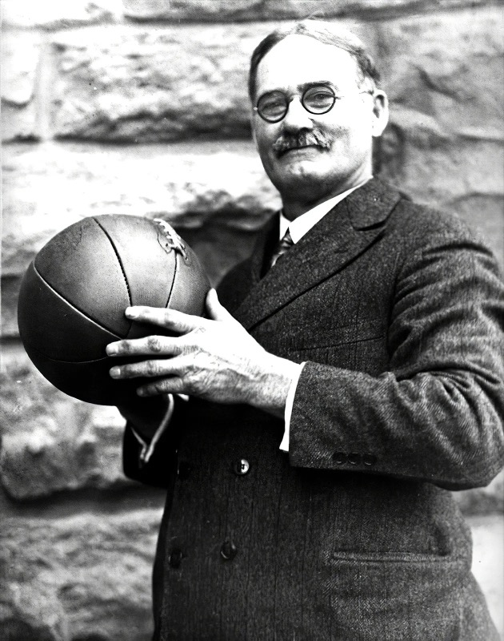

Use the colour map above. Say your guess out loud — then open the answer.
Click an idiom on the left, then its definition on the right. All fifteen — start with the colours you already know.
| # | Idiom | Definition | |
|---|---|---|---|
| 1 | a blue blood | D | an aristocratic person |
| 2 | a red letter day | J | a special day |
| 3 | black eye | L | an area of skin around the eye that is dark because of fighting |
| 4 | black tie | A | clothes for very formal occasions |
| 5 | colorless | H | boring |
| 6 | greens | N | vegetables |
| 7 | once in a blue moon | O | infrequently |
| 8 | paint a black picture | B | to describe a situation as extremely bad |
| 9 | pinko | K | communist |
| 10 | see red | I | become very angry |
| 11 | the blues | G | sadness |
| 12 | the silver screen | M | the movies |
| 13 | the thin blue line | C | the police |
| 14 | to pass with flying colors | E | to do very well |
| 15 | yellow | F | cowardly |
Six gaps, nine idioms — three are not needed. Click an option to cross it out once you've used it.
The invitation said (1) , which was how Eleanor knew the Ashcombes were desperate. Nobody dresses for dinner when the money is fine. Everyone in the village had heard the rumours: the estate had been (2) for three years, and the bank had stopped pretending to be patient.
Her father polished his shoes twice. He visited Harrowgate (3) , and only when summoned, so the evening was, in its odd way, (4) for him. Eleanor watched him at the long table, nodding while Lord Ashcombe talked about horses, and she saw the exact moment he (5) : the old man had called the new road "a favour to the peasants". Her father put down his glass very gently.
But it was Lady Ashcombe who ended it. She rose, looked around the silent table, and said, quite calmly, "We are selling." It was (6) , and everyone at the table knew it.
Two rounds. Round 1 — quick answers, one idiom each. Round 2 — a two-minute story with at least five idioms.
What makes you see red? Give a real example from the last month.
What's something you do only once in a blue moon — and why so rarely?
Describe your last red letter day. What made it special?
When did you last raise the white flag in an argument? Were you right to?
Think of a film or book: who is the black sheep of the family, and how do the others treat them?
What do you do when you're feeling blue? Does it work?
Have you ever told a white lie to protect someone's feelings? What was it?
Set the scene: what was the occasion, and why were you looking forward to it?
What went wrong — who made you see red, and did anybody end up with a black eye (literally or not)?
How did it end — did someone raise a white flag, tell a white lie, or paint a black picture of the whole thing?
Idiom bank — tap what you manage to use:
Used: 0 / 5 needed
I wish/If only I'd learnt to swim properly when I was a kid.
I wish/If only I was/were taller.
I wish/If only people wouldn't make fun of my favourite sport.
What tense appears after I wish/If only in sentence a?
Does this sentence talk about a present or past situation that we would like to be different?
What tense appears after I wish/If only in sentence b?
Does this sentence talk about an imaginary wish for a present or past situation?
What verb form appears after I wish/If only in sentence c?
Do we use sentence c to talk about habitual behaviour that we like, or that we want to criticise and change?
If only I (have) a motorbike! I'd ride it every day.
If only he (not shout). I can't concentrate with the noise he makes.
I wish we (not buy) tickets for the concert. I've just found out we've got an exam the morning after!
I wish I (go) skiing yesterday. They say the conditions were perfect.
If only I (be) 18 already. I'd be able to vote.
I wish you (clean) the kitchen after using it.
Everything from this lesson turns up here — wishes, conditionals and the four linkers.
If (a) I had more time to do sport this year. I'm in my last year of school and I have lots of exams and assignments. I (b) I didn't have so many! I used to be in the school basketball team but I stopped. I wish I (c) given it up. But if I (d) continued playing, I (e) have spent far too much time on matches and training, although I still go running and swimming occasionally. I think that as (f) as you get some exercise from time to time, you can stay more or less fit. I always do sport at least once at the weekend (g) it's absolutely impossible because of homework and revision. I'm always careful with what I eat, too, and I try to avoid eating too much junk food (h) case I put on a lot of weight. Provided (i) you have a balanced diet, you should be able to keep (j) shape quite easily. The problem is that my mum is always buying me my favourite cakes. I wish she (k) do that because I find it difficult to resist them! Anyway, providing I take (l) sport again next year, I'm sure I (m) be as fit (n) I was before.
A present situation that you would like to be different.
A past situation you regret.
Somebody who does something that you would like to change.
Five names you'll meet again and again in olympiad culture tasks. Click a name, then the pair of titles.
Charles Dickens (1812–1870) — the great Victorian novelist of London's poor; also A Christmas Carol, David Copperfield.
Charlotte Brontë (1816–1855) — eldest of the three Brontë sisters of Haworth, Yorkshire; published Jane Eyre as “Currer Bell”.
Thomas Hardy (1840–1928) — set his tragic rural novels in “Wessex”, his fictional version of Dorset; also Jude the Obscure.
Oscar Wilde (1854–1900) — Irish wit and playwright, famous for epigrams; also The Canterville Ghost, Lady Windermere's Fan.
Virginia Woolf (1882–1941) — modernist, stream of consciousness, central figure of the Bloomsbury Group; also Orlando, A Room of One's Own.
Read each extract and choose the author. Look for clues: a name, a place, the period, the voice.
“Good-morning to you, Clarissa!” said Hugh, rather extravagantly, for they had known each other as children. “Where are you off to?”
“I love walking in London,” said Mrs. Dalloway. “Really it’s better than walking in the country.”
“My lord,” answered the minister, “I will take the furniture and the ghost at a valuation. I have come from a modern country, where we have everything that money can buy; and with all our spry young fellows painting the old world red, and carrying off your best actors and prima-donnas, I reckon that if there were such a thing as a ghost in Europe, we’d have it at home in a very short time in one of our public museums, or on the road as a show.”
The young man, thus invited, glanced them over, and attempted some discrimination; but, as the group were all so new to him, he could not very well exercise it. He took almost the first that came to hand, which was not the speaker, as she had expected; nor did it happen to be Tess Durbeyfield. Pedigree, ancestral skeletons, monumental record, the d’Urberville lineaments, did not help Tess in her life’s battle as yet, even to the extent of attracting to her a dancing-partner over the heads of the commonest peasantry. So much for Norman blood unaided by Victorian lucre.
Although I am not disposed to maintain that the being born in a workhouse, is in itself the most fortunate and enviable circumstance that can possibly befall a human being, I do mean to say that in this particular instance, it was the best thing for Oliver Twist that could by possibility have occurred. The fact is, that there was considerable difficulty in inducing Oliver to take upon himself the office of respiration,—a troublesome practice, but one which custom has rendered necessary to our easy existence; and for some time he lay gasping on a little flock mattress, rather unequally poised between this world and the next: the balance being decidedly in favour of the latter.
“She has screamed out on purpose,” declared Abbot, in some disgust. “And what a scream! If she had been in great pain one would have excused it, but she only wanted to bring us all here: I know her naughty tricks.”
“What is all this?” demanded another voice peremptorily; and Mrs. Reed came along the corridor, her cap flying wide, her gown rustling stormily. “Abbot and Bessie, I believe I gave orders that Jane Eyre should be left in the red-room till I came to herself.”
“Miss Jane screamed so loud, ma’am,” pleaded Bessie.
The voice moves on the highlighted word. Read every example aloud and exaggerate the movement the first time — then do it naturally.
The default. The voice drops on the last important word. It sounds calm, neutral and finished — you'll hear it at the end of most sentences in everyday talk.
“Your turn.” The voice goes up at the end and stays hanging — it invites the other person to answer.
The robot voice. The pitch doesn't move at all. English speakers don't do this in real conversation — it sounds bored or mechanical. If you're told you sound flat, make your voice move.
Up, then down. The rise says “there's more coming”; the fall says “and that's all.” Two arrows, one sentence.
Decide first, check, then read each one aloud with that intonation.
Where did you put the keys?
Have you seen my phone?
Would you like tea or coffee?
Close the window.
She’s from Canada, isn’t she?
I bought apples, bread, milk and eggs.
Why is he so late?
If it rains, we’ll stay at home.
Is this seat taken?
We’re moving to Bristol.
Read each line following the arrows. Then cover the arrows and read it again from memory.
Dress code: ↗black tie or ↘smart casual?
If the estate is still ↗in the red, they’ll have to ↘sell.
Seeing Mum ↗saw red, we all ↘went quiet.
You only call me once in a blue ↘moon.
It was a real red letter ↘day.
He’s the black sheep of the family, ↗isn’t he?
Are you ↗feeling blue?
She raised a ↗white flag, apologised, and ↘went home.
Click an idiom on the left, then its definition on the right. Use the colour map from Task 1 — most of these follow it.
Every answer is a colour or the missing word of a colour idiom from this lesson.
Complete the text by putting the verbs in the correct form of the zero, first, second or third conditional. Read the whole sentence first — the other half tells you which type you need.

The world would be a sadder place for many people if basketball (a) (not exist). If you do some research into the origins of the sport, you (b) (see) that it was the invention of one man. That's right. If it (c) (not be) for James Naismith (1861–1939), basketball would never have existed. Naismith was a Canadian PE teacher who worked in the US. If Naismith (d) (have) a different profession, I imagine he wouldn't have thought up this new sport. His director gave him 14 days to create a new indoor sport. It had to be indoors because the weather was bad in the winter where they lived. Of course, if you play indoors, you (e) (not get) cold or wet. The director also wanted the sport to be non-aggressive. If he hadn't told Naismith this, perhaps Naismith (f) (not make) basketball a non-contact sport. Naismith's original baskets were wooden fruit baskets which didn't have a hole. If we (g) (have) the same baskets today, we would need a ladder to get the ball back every time a player scored! If basketball hadn't become so popular, maybe people (h) (forget) about James Naismith a long time ago. But it's thanks to him that one of the world's most popular sports exists.
Complete each sentence with a phrase from the box. Each one is used once — click it to cross it out.
I found the café — I took a wrong turn and there it was.
Thousands of teenagers hay fever every spring.
Actors have to learn hundreds of lines .
He didn’t break the window ; the ball just slipped out of his hand.
British schools American ones in several ways, starting with the uniform.
The phone rang the exam, and everyone looked up.
Can you wait here ? The doctor is running late.
last year, this winter has been surprisingly mild.
The colour is missing from each idiom. The ten you'll meet most often — no word box this time.
He saw when he saw the scratch on his new bike.
We only eat out once in a moon.
My uncle is the sheep of the family — he ran away to join a circus.
I told a lie and said I loved the jumper.
Getting the visa took months because of all the tape.
The shop has been in the since the new supermarket opened.
The invitation says tie, so I need to hire a dinner jacket.
After an hour of arguing, Dad raised the flag and let us stay up late.
The day the letter from Oxford arrived was a real letter day.
He’s been feeling since his best friend moved abroad.